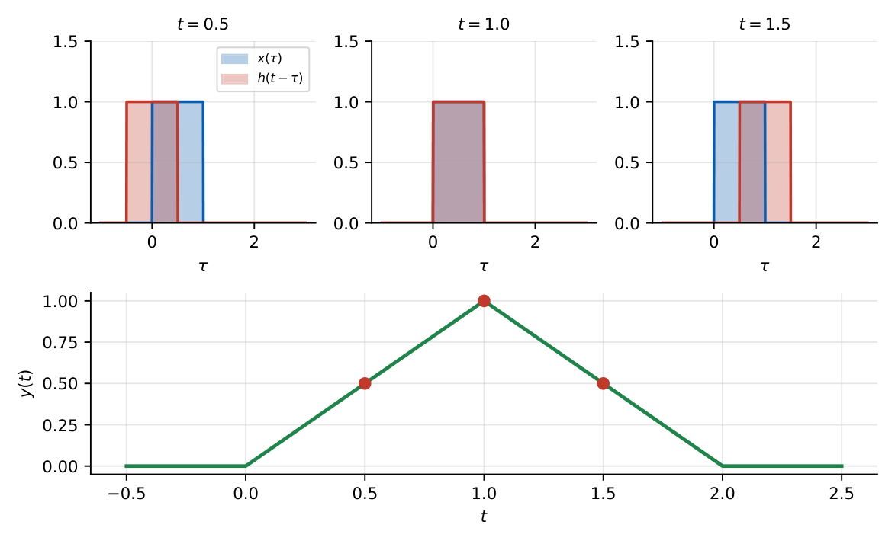
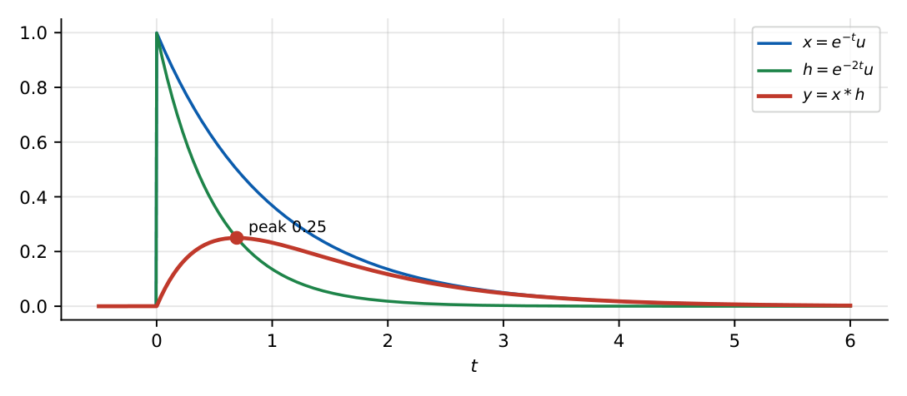
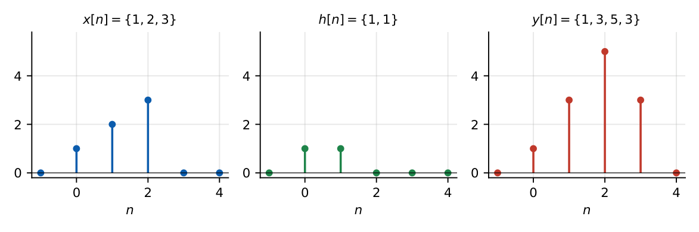

Convolution
In this chapter
- 17.1 Convolution concept
- 17.2 Continuous-time convolution
- 17.3 Graphical convolution
- 17.4 Mathematical convolution
- 17.5 Properties of convolution
- 17.6 Discrete-time convolution
- 17.7 Graphical DT convolution
- 17.8 Convolution using unit impulses
- 17.9 Step-response relationship
- 17.10 LTI-system analysis using convolution
Graphical/analytical convolution of standard signals (rect\(*\)rect, exponentials, steps), DT convolution of short sequences, duration/area/shift properties. A 2-mark convolution question appears in most papers.
17.1 Convolution concept
For an LTI system, write the input as a weighted sum (integral) of shifted impulses; by linearity and time-invariance the output is the same sum of shifted impulse responses. This is convolution.
17.2 Continuous-time convolution
\(y(t)=x(t)*h(t)=\displaystyle\int_{-\infty}^{\infty}x(\tau)\,h(t-\tau)\,d\tau=\int_{-\infty}^{\infty}h(\tau)\,x(t-\tau)\,d\tau.\)
17.3 Graphical convolution
- Draw \(x(\tau)\) and \(h(\tau)\) against the dummy variable \(\tau\).
- Flip \(h(\tau)\to h(-\tau)\).
- Shift by \(t\): \(h(t-\tau)\) (right for \(t>0\)).
- Multiply \(x(\tau)h(t-\tau)\) and integrate (area of the overlap).
- Repeat for each range of \(t\) (before overlap, partial overlap, full overlap, after).

\(x=h=u(t)-u(t-1)\). For \(0\le t\le1\) the overlap is \(t\); for \(1\le t\le2\) it is \(2-t\); else \(0\). So \(y(t)\) is a triangle on \([0,2]\) with peak \(1\) at \(t=1\). For two rectangles of width \(2\): peak \(=2\) at \(t=2\), base \([0,4]\).
17.4 Mathematical convolution
\(x=e^{-t}u(t)\), \(h=e^{-2t}u(t)\): \(y(t)=\displaystyle\int_0^te^{-\tau}e^{-2(t-\tau)}d\tau=e^{-2t}\int_0^te^{\tau}d\tau=e^{-t}-e^{-2t}\), \(t\ge0\).
General: \(e^{-at}u*e^{-bt}u=\dfrac{e^{-bt}-e^{-at}}{a-b}u(t)\) (\(a\ne b\)); \(e^{-at}u*e^{-at}u=te^{-at}u(t)\).
\(x=u(t)\), \(h=e^{-t}u(t)\): \(y=\int_0^te^{-\tau}d\tau=1-e^{-t}\). In general \(u*h=\int_{-\infty}^th\) (the step response). Also \(u*u=r(t)=t\,u(t)\).

17.5 Properties of convolution
| Property | Statement |
|---|---|
| Commutative | \(x*h=h*x\) |
| Associative | \((x*h_1)*h_2=x*(h_1*h_2)\) |
| Distributive | \(x*(h_1+h_2)=x*h_1+x*h_2\) |
| Identity | \(x*\delta=x\); \(x*\delta(t-t_0)=x(t-t_0)\) |
| Shift | \(x(t-a)*h(t-b)=y(t-a-b)\) |
| Scaling | \(x(at)*h(at)=\frac1{|a|}y(at)\) |
| Derivative | \(\frac{d}{dt}(x*h)=x'*h=x*h'\) |
| Area | \(\int y=\left(\int x\right)\left(\int h\right)\) (DC gain product) |
| Width | duration\((y)=\) duration\((x)+\) duration\((h)\); support \([a_1+b_1,\ a_2+b_2]\) |
| Causal \(*\) causal | causal |
Before computing, use the support rule and the area rule as a check: \(x\) on \([1,3]\) and \(h\) on \([-1,2]\) give \(y\) on \([0,5]\); area of \(y=\) area(\(x\))\(\times\)area(\(h\)).
17.6 Discrete-time convolution
\(y[n]=\displaystyle\sum_{k=-\infty}^{\infty}x[k]h[n-k]\); length \(L_x+L_h-1\); \(x[n]*\delta[n-n_0]=x[n-n_0]\); \(x*u=\) running sum \(\sum_{k\le n}x[k]\).
17.7 Graphical DT convolution
- Table (sliding) method: flip \(h\), slide over \(x\), sum products at each \(n\).
- Polynomial method: treat \(x[n]\) and \(h[n]\) as coefficients of polynomials in \(z^{-1}\); multiply the polynomials.
\(x=\{1,2,3\}\) (\(n=0,1,2\)), \(h=\{1,1\}\): \(y=\{1,\,2+1,\,3+2,\,3\}=\{1,3,5,3\}\); sums \(6\times2=12\) (\(1+3+5+3\)). ✓
\(x=\{1,2,1\}\), \(h=\{1,-1\}\): \(y=\{1,1,-1,-1\}\) (a first difference; area \(=0\) because \(\sum h=0\)).
\(x=\{1,2,1\}\), \(h=\{1,1,1\}\): \(y=\{1,3,4,3,1\}\).

17.8 Convolution using unit impulses
If \(x(t)=\sum_kA_k\delta(t-t_k)\) then \(x*h=\sum_kA_kh(t-t_k)\): a superposition of shifted copies of \(h\). E.g. \([\delta(t)+\delta(t-2)]*\rect(t)\) gives two unit rectangles (echoes).
17.9 Step-response relationship
\(y=x*h\); derivative property: \(y'=x*h'\). Since \(h=s'\), \(y=x'*s\): an input of piecewise-constant pieces gives a sum of shifted step responses.
17.10 LTI-system analysis using convolution
For a system with \(h(t)=e^{-t}u(t)\) and \(x=u(t)-u(t-2)\): \(y=s(t)-s(t-2)\) with \(s=1-e^{-t}\): \(y=(1-e^{-t})u(t)-(1-e^{-(t-2)})u(t-2)\); \(y(2)=1-e^{-2}=0.865\).
Q1. \(x(t)*\delta(t-2)=\) (A) \(x(t+2)\) (B) \(x(t-2)\) (C) \(x(2t)\) (D) \(2x(t)\).
Q2. The convolution of a sequence of length \(4\) with one of length \(5\) has length (A) 4 (B) 5 (C) 8 (D) 9.
Q3. If \(\int x=2\) and \(\int h=3\) then \(\int(x*h)=\) (A) 5 (B) 6 (C) 1.5 (D) 0.
Answers: Q1 (B). Q2 (C): \(4+5-1=8\). Q3 (B).
Q4. \(x[n]=\{1,2,1\}\) (starting at \(n=0\)) convolved with \(h[n]=\{1,1,1\}\): \(y[2]=\) (A) \(1\) (B) \(3\) (C) \(4\) (D) \(2\).
Q5. \(x(t)=u(t)-u(t-2)\) is convolved with itself. The value at \(t=2\) is (A) \(1\) (B) \(2\) (C) \(4\) (D) \(0\).
Answers: Q4 (C). Q5 (B): triangle of base \([0,4]\) and peak \(2\) at \(t=2\).
Q6. \(e^{-t}u(t)*e^{-2t}u(t)\) evaluated at \(t=1\) is (three decimals).
Q7. \(x[n]=\{1,2,3\}\), \(h[n]=\{1,1\}\): \(\sum_ny[n]=\) .
Answers: Q6: \(e^{-1}-e^{-2}=0.368-0.135=0.233\). Q7: \(6\times2=12\).
Q8. Which are true? (A) convolution is commutative (B) \(x*u\) is the running integral of \(x\) (C) \(x(t-1)*h(t-2)=y(t-3)\) (D) \(x*\delta'=x\).
Answers: Q8: (A), (B), (C). (D) is false: \(x*\delta'=x'\).
(i) Forgetting to flip. (ii) Wrong limits: the overlap ranges change at breakpoints. (iii) Assuming the length of DT convolution is \(L_x+L_h\) (it is \(-1\)). (iv) Shifting only one signal by both delays in the shift property: delays add. (v) Confusing convolution with correlation (no flip).
T1. \(u(t)*u(t)=?\) T2. \(x=\{1,-1\}\), \(h=\{1,2,3\}\): find \(y\).
Answers: T1: \(r(t)=tu(t)\). T2: \(y=\{1,\,2-1,\,3-2,\,-3\}=\{1,1,1,-3\}\).
- \(y=\int x(\tau)h(t-\tau)d\tau\); flip, shift, multiply, integrate. DT: \(\sum x[k]h[n-k]\), length \(L_x+L_h-1\).
- \(x*\delta(t-t_0)=x(t-t_0)\); \(x*u=\int_{-\infty}^tx\); \(u*u=r\).
- rect\(*\)rect \(=\) triangle (base \(2T\), peak \(T\) for width \(T\)).
- \(e^{-at}u*e^{-bt}u=\frac{e^{-bt}-e^{-at}}{a-b}u\); equal rates: \(te^{-at}u\).
- Support adds; area multiplies; delays add.